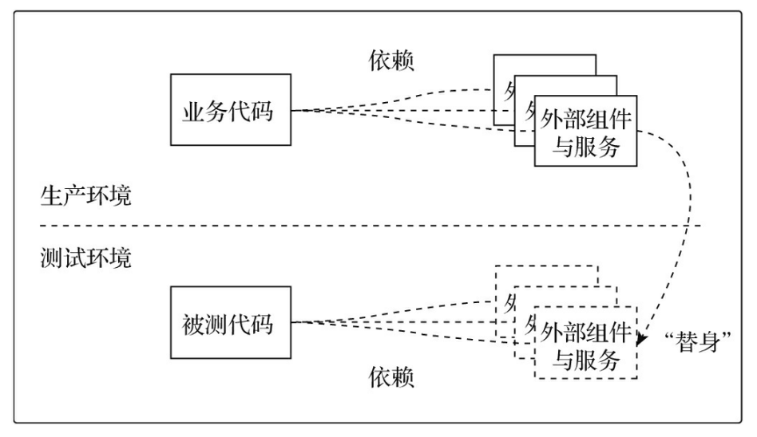

在对Go代码进行测试的过程中，会经常面对被测代码对外部业务组件或服务的依赖。比如：
- 被测代码需要连接外部Redis服务；
- 被测代码依赖一个外部邮件服务器来发送电子邮件；
- 被测代码需与外部数据库建立连接并进行数据操作；
- 被测代码使用了某个外部RESTful服务；
在生产环境中为运行的业务代码提供其依赖的真实组件或服务是必不可少的，也是相对容易的。
但是在开发测试环境中，我们无法像在生产环境中那样，为测试（尤其是单元测试）提供真实运行的外部依赖。
- 为了能让对此类被测代码的测试进行下去，我们需要为这些被测代码提供其
依赖的外部组件或服务的替身：

显然用于代码测试的“替身”不必与真实组件或服务完全相同，替身只需要提供与真实组件或服务相同的接口，只要被测代码认为它是真实 的即可。
替身的概念是在测试驱动编程理论中被提出的。作为测试驱动编程理论的最佳实践，xUnit家族框架将替身的概念在单元测试中应用得淋漓尽致，并总结出多种替身，比如fake、stub、mock等。
1. fake：真实组件或服务的简化实现版替身
fake测试就是指采用真实组件或服务的简化版实现作为替身，以满足被测代码的外部依赖需求。
比如：当被测代码需要连接数据库进行相关操作时，虽然我们在开发测试环境中无法提供一个真实的关系数据库来满足测试需求，但是可以基于哈希表实现一个内存版数据库来满足测试代码要求，我们用这样一个伪数据库作为真实数据库的替身，使得测试顺利进行下去。
// $GOROOT/src/database/sql/fakedb_test.go
...
type fakeDriver struct {
mu sync.Mutex
openCount int
closeCount int
waitCh chan struct{}
waitingCh chan struct{}
dbs map[string]*fakeDB
}
...
var fdriver driver.Driver = &fakeDriver{}
func init() {
Register("test", fdriver) //将自己作为driver进行了注册
}
...
// $GOROOT/src/database/sql/sql_test.go
func TestUnsupportedOptions(t *testing.T) {
db := newTestDB(t, "people")
defer closeDB(t, db)
_, err := db.BeginTx(context.Background(), &TxOptions{
Isolation: LevelSerializable, ReadOnly: true,
})
if err == nil {
t.Fatal("expected error when using unsupported options, got nil")
}
}
const fakeDBName = "foo"
func newTestDB(t testing.TB, name string) *DB {
return newTestDBConnector(t, &fakeConnector{name: fakeDBName}, name)
}
func newTestDBConnector(t testing.TB, fc *fakeConnector, name string) *DB {
fc.name = fakeDBName
db := OpenDB(fc)
if _, err := db.Exec("WIPE"); err != nil {
t.Fatalf("exec wipe: %v", err)
}
if name == "people" {
exec(t, db, "CREATE|people|name=string,age=int32,photo=blob,dead=bool,bdate=datetime")
exec(t, db, "INSERT|people|name=Alice,age=?,photo=APHOTO", 1)
exec(t, db, "INSERT|people|name=Bob,age=?,photo=BPHOTO", 2)
exec(t, db, "INSERT|people|name=Chris,age=?,photo=CPHOTO,bdate=?", 3, chrisBirthday)
}
if name == "magicquery" {
exec(t, db, "CREATE|magicquery|op=string,millis=int32")
exec(t, db, "INSERT|magicquery|op=sleep,millis=10")
}
return db
}
- 使用fake替身进行测试的最常见理由是在测试环境无法构造被测代码所依赖的外部组件或服务，或者这些组件/服务有副作用。
- fake替身的实现也有两个极端：
- 要么像标准库fakedb_test.go那样实现一个全功能的简化版内存数据库driver；
- 要么针对被测代码的调用请求仅返回硬编码的成功或失败；
- 这两种极端有一个共同点：并不具备在测试前对返回结果进行预设置的能力。
2. stub：对返回结果有一定预设控制能力的替身
- 和fake替身相比，stub替身增强了对替身返回结果的间接控制能力，这种控制可以通过测试前对调用结果预设置来实现。
- 不过，stub替身通常仅针对计划之内的结果进行设置，对计划之外的请求也无能为力。
- 在GitHub上有一个名为 gostub 的第三方包可以用于简化stub替身的管理和编写。
3. mock：专用于行为观察和验证的替身
- 和fake、stub替身相比，mock替身更为强大：它除了能提供测试前的预设置返回结果能力之外，还可以对mock替身对象在测试过程中的行为进行观察和验证。
- 和前两种替身相比，mock的应用范围要窄很多，只用于实现某接口的实现类型的替身。
- 一般需要通过第三方框架实现mock替身。Go官方维护了一个mock框架 —— gomock ，该框架通过代码生成的方式生成实现某接口的替身类型。
- gomock是一个通用的mock框架，社区还有一些专用的mock框架可用于快速创建mock替身，比如：go-sqlmock专门用于创建sql/driver包中的Driver接口实现的mock替身，可以帮助Gopher简单、快速地建立起对数据库操作相关方法的单元测试。